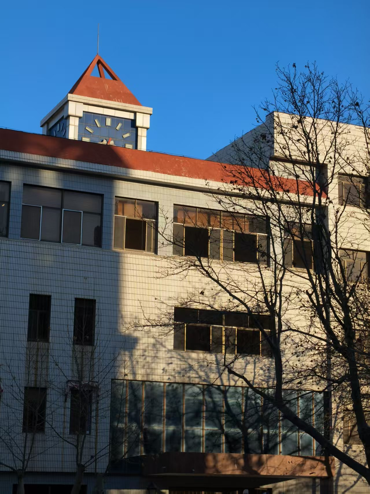
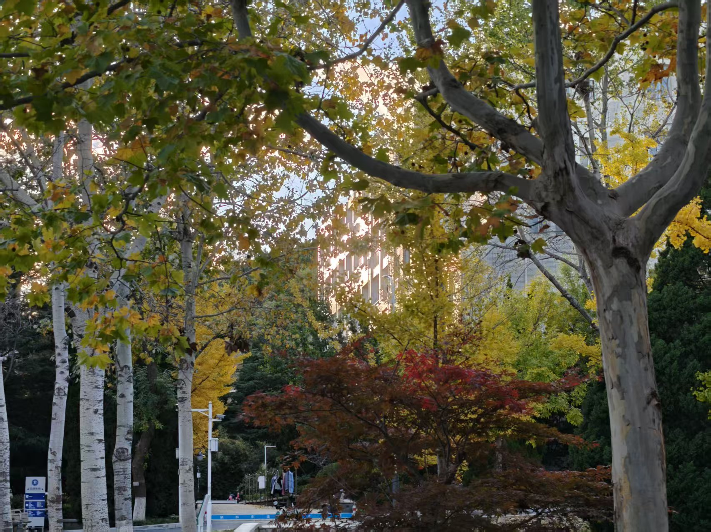
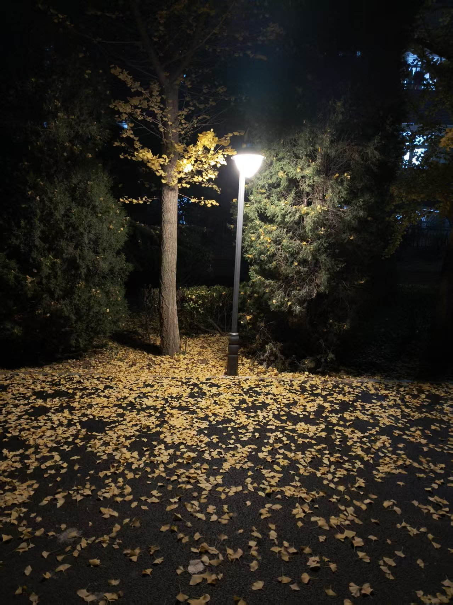

春风拂过校园的每一个角落，将沉睡了一冬的草木轻轻唤醒，漫步在校园的小径上，满眼都是生机盎然的景象。道路两旁的柳树抽出了嫩黄的新芽，细长的枝条随风轻摆，像是在向来往的师生招手致意。樱花、桃花、玉兰竞相开放，粉白相间的花瓣缀满枝头，微风一吹，花瓣纷纷扬扬地飘落，铺成一条温柔的花径，走在其中仿佛置身于梦幻的童话世界。清晨的阳光透过枝叶的缝隙洒下斑驳的光影，空气中弥漫着青草与鲜花混合的清新气息，深吸一口气，整个人都觉得神清气爽。湖边的池水解冻后变得清澈见底，几只野鸭在水面悠闲地游弋，泛起一圈圈细碎的涟漪，岸边的鹅卵石被水洗得光滑温润，偶尔有学生坐在石凳上读书，画面安静又美好。校园的春天没有城市的喧嚣与浮躁，只有自然的宁静与美好，每一处风景都在诉说着生命的力量，每一次呼吸都能感受到大自然赋予的温暖与希望，让人心生眷恋，不愿离去。
除了绚烂的花草，校园的自然风光还藏在那些错落有致的建筑与绿植之间，教学楼前的花坛四季常青，春天更是添了几分灵动的色彩。运动场周围的树木郁郁葱葱，新长出来的叶子嫩绿鲜亮，在阳光下闪着柔和的光。沿着校园的后山往上走，能看到成片的竹林和灌木丛，春雨过后，泥土的芬芳扑面而来，偶尔还能听到小鸟清脆的鸣叫，给静谧的山林增添了无限趣味。站在高处俯瞰整个校园，红墙绿树相互映衬，花海与绿地交织在一起，构成一幅绝美的春日画卷。无论是清晨跑步的学子，还是午后散步的老师，都会被这如画的风景深深打动。这里的一草一木都充满了生命力，一景一致都承载着校园的温柔，春华时节的校园，用最动人的自然之美，迎接每一个努力奔跑的人，也用最纯粹的风景，治愈着每一个心灵。


